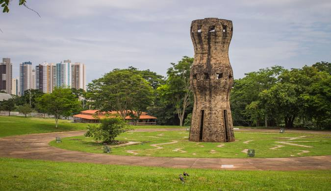

Mato Grosso do Sul é uma unidade federativa localizada na região Centro-Oeste do Brasil. Tem como capital o município de Campo Grande, o mais populoso do estado. Sua paisagem natural é composta predominantemente por dois biomas, o Cerrado e o Pantanal, além de um relevo, em sua maior parte, plano
